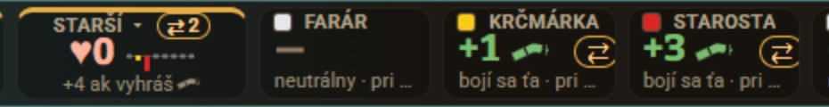
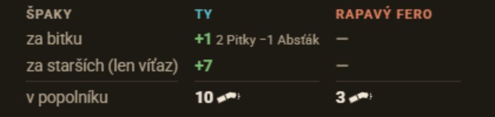
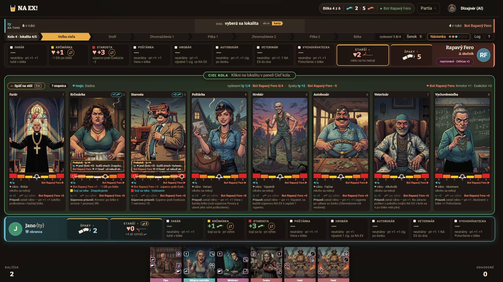
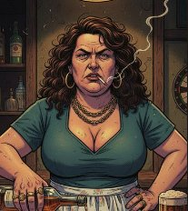
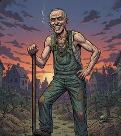

Dnes: štvorček, stĺpčeky a text
Ukážky nižšie sú prekreslené zo súčasného kódu (rovnaké tokeny a texty). Porovnaj ich s ktoroukoľvek sadou.
Verdikt. Strach dnes nemá vlastný znak. Na stole ho nesie 10 px farebný štvorček, text „bojí sa…“ a ohorok špaku. Hráč preto nevidí, že zelené „+1“ v bare je strach. Farboslepý zase nerozlíši oranžovú od červenej, pri deuteranopii majú medzi sebou kontrast 1,62 : 1.
Navrhujem jeden piktogram v troch stupňoch, ktorý zónu nesie tvarom aj počtom a stojí vedľa ♥ ako jeho rub. Odporúčam sadu B „Tvár staršieho“: grimasa a 1, 2 alebo 3 kvapky potu, toľko, koľko špakov starší dá. Je najčitateľnejšia pri 16 px a netreba ju vysvetľovať. Odvážnejšia alternatíva s väčším humorom je D „Kolená“ (trasú sa, klepú sa, mláčka).
Snímky sú z ukážky stola (/hra/ukazka-stola?stop=kolo&i=4&lokalit=5&seed=8, kolo 4, hráč Jano proti Botovi Rapavému Ferovi) a z ukážky rekapitulácie. Odfotené pri 1920 × 1080 a 1366 × 650. Krčmárka sa Jana bojí v žltej zóne, Starosta je vydesený.



.ls-peciatka.moja/.superova nemajú štýl). Zónu pod stupnicou nesie len farba štvorčeka.


| Miesto | Kód | Čím sa strach ukazuje dnes |
|---|---|---|
| Línia: riadok pod stupnicou | LiniaStarsich.tsx:446–459, ZnackaZony :135 | štvorček zóny + „bojí sa teba · Znepokojenie“ vo farbe hráča |
| Línia: hlavička karty | LiniaStarsich.tsx:410–415 | čip „+1 ohorok“, strach je preložený rovno na špaky |
| Línia: portrét | LiniaStarsich.tsx:421, hra.css:5364 | pečiatka „vydesený“, text 0,6 rem, vždy červená |
| Stupnica | LiniaStarsich.tsx:617–623 | farba poľa + číslica 0–3 pod ním |
| Legenda „? stupnica“, lupa | LiniaStarsich.tsx:297–305, 705–719 | štvorčeky zón v texte |
| Dlaždica Starší | Starsi.tsx:47–60, hra.css:6137–6190 | stĺpčeky (stupienky) 3–7 px široké, výška 4/8/12 px, „+4 ak vyhráš“ |
| Bar starších | Starsi.tsx:87–120, hra.css:6086–6106 | štvorček pri mene, „+1 ohorok“ zelenou, „bojí sa ťa · pri výhre“ |
| Horný bar, hrozba vydesenia | HernaPlocha.tsx:4275–4295, 4793–4800 | text „vydesení 1:0/4“, textový pás |
| Nástenka | Spaky.tsx:188–212, 238 | slovo „starší“ |
| Rekapitulácia, účet bitky | Spaky.tsx:289, 341, HernaPlocha.tsx:4924 | „za starších (len víťaz)“, „+7 starší“ |
| Bodovacie ikony (tlač scorecardov, achievement Strašiak) | seed/bodovanie/ikony/{znepokojenie,strach,vydesenie}.svg | 1, 2, 3 „pazúry“ (škrabance), čo pôsobí ako útok, nie strach. Na stole ich od v6 nič nepoužíva. |
Kontrasty sú prepočítané podľa WCAG 2.2. Simulácia farbosleposti: Machado 2009, závažnosť 1,0.
| # | Problém | Závažnosť | Dôkaz |
|---|---|---|---|
| U1 | Strach nemá piktogram. Priazeň má ♥, špak má ohorok, strach nemá nič. Nesú ho len text, farba a ohorok, takže stav „bojí sa ma“ splýva so stavom „dá mi špaky“. | vysoká | stav-1366-linia, vyrez-bar-1366; Starsi.tsx:90–96 |
| U2 | Zónu nesie len farba. Štvorček 9–10 px: žltá, oranžová, červená. Pri deuteranopii sú z nich tri olivové odtiene (oranžová/červená 1,62 : 1, žltá/oranžová 1,68 : 1). Stupienky pridávajú výšku, lenže stĺpček je pri 1366 široký 3–4 px. | vysoká | vyrez-bar-1366; hra.css:5553, 6137–6190 |
| U3 | Štvorček zóny vyzerá ako zaškrtávacie políčko. Neutrálny je biely so svetlým okrajom („□ FARÁR“), farebné vyzerajú ako zaškrtnuté. | stredná | vyrez-bar-1366; Starsi.tsx:120 |
| U4 | Ten istý význam zakaždým inak. V bare zelené „+1 ohorok“, v hlavičke karty „+1“ vo farbe hráča, na dlaždici „+4 ak vyhráš“, na nástenke slovo „starší“, v rekapitulácii „za starších“. Spoločný znak by tieto miesta spojil. | stredná | všetky snímky |
| U5 | Pečiatka VYDESENÝ je malá a jednofarebná. Vydesenie je výherná podmienka, a predsa má na portréte iba 9,6 px text. Na čí prospech je vydesený, z nej nevidno. | stredná | vyrez-linia-1366; hra.css:5364–5380 |
| U6 | Oranžová zóna a farba súpera splývajú. --su #e0805f a #f97316 majú medzi sebou 1,01 : 1. Ak piktogram v oranžovej stojí pri mene súpera, musí ho niesť tvar, nie farba. | nízka | schemy.css, geometria.ts:120 |
| U7 | Bodovacie ikony zón hovoria „útok“. 1, 2, 3 pazúry sú obkreslené z rastra (10 kB) a so stolom nesúvisia. | nízka | seed/bodovanie/ikony/strach.svg |
| U8 | Počítadlo „vydesení 1:0/4“ nemá znak a v úzkom bare sa stráca medzi fázami kola. | nízka | stav-1366-linia; HernaPlocha.tsx:4793–4800 |
Kontrast farieb zón ako grafiky (WCAG 1.4.11, treba 3 : 1) na --plocha-2 #28211a: žltá 10,37, oranžová 5,66, červená 3,29 : 1. Na --plocha #1e1914: 11,39 / 6,22 / 3,61. Všetky prejdú, červená tesne. Piktogramy preto majú plnú siluetu, nie tenké línie.
Všetky sady sú plné siluety v mriežke 24 × 24 s farbou cez currentColor, rovnako ako ohorok (IkonaSpaku.tsx) a piktogramy akcií. Stupeň nesú vždy aspoň dve veci: tvar a počet, farba zóny je až tretia. Prepínač hore mení sadu vo všetkých ukážkach. „Dnes“ ukáže súčasný stav pre porovnanie.
Ukážky nižšie sú prekreslené zo súčasného kódu (rovnaké tokeny a texty). Porovnaj ich s ktoroukoľvek sadou.
Nápad: starší sa potí. 1, 2 alebo 3 kvapky. Počet kvapiek = zóna = špaky, ktoré dá po výhre, takže hráč číta jednu vec.
Pre farboslepých: nesie to len počet, a ten je spoľahlivý aj pri 16 px.
Plus: najčitateľnejšia, najmenšia a najjednoduchšia na implementáciu. Vedľa ♥ (špička dole) má kvapka špičku hore, takže sa nepletú.
Mínus: málo humoru, bez staršieho v obraze. Červené kvapky môžu pripomínať krv, oranžové pri 16 px plamienok.
Nápad: plná okrúhla tvár staršieho s grimasou. Znepokojenie: zvraštené obočie, vlnité ústa, 1 kvapka. Strach: okále, ústa „O“, 2 kvapky. Vydesenie: vlasy dupkom, krik so zubami, 3 kvapky.
Pre farboslepých: nesú to tri veci naraz: výraz, počet kvapiek (zase = špaky) a vlasy pri vydesení.
Plus: tvár so zjavnou emóciou je zrozumiteľná bez legendy, ľudia ju poznajú z emoji. Od ♥ je tvarovo najďalej. Grimasy sedia ku karikatúrnym portrétom starších.
Mínus: pri 16 px sú kvapky len bodky a stupeň nesie najmä výraz a vlasy. Masky treba v Reacte nahradiť zloženou cestou (fill-rule="evenodd"), inak by sa opakovali id.
Nápad: „vlasy sa mu zježili“. Plešatý starší v dedinskom klobúku: vlasy rastú a dvíhajú klobúk. Pri vydesení klobúk odletí a oči sa vyvalia.
Pre farboslepých: výška klobúka (nízko, stredne, letí) a dĺžka vlasov. Je to ako teplomer.
Plus: najviac „dedinská“ sada, klobúk je znak staršieho. Vtipná, a pritom slušná.
Mínus: pri 16 px je rozdiel medzi 1 a 2 asi 2 px výšky klobúka. Počet tu nič nenesie, takže čitateľnosť je slabšia ako pri A a B.
Nápad: „trasú sa mu kolená“. Nohavice staršieho: Znepokojenie, rovné nohy a jeden pár chvenia. Strach, kolená do X a dvojité chvenie. Vydesenie, kolená do X, kvapka a mláčka pod ním (pocikaný, s mierou: len silueta vo farbe zóny).
Pre farboslepých: rovné nohy → X → X s mláčkou, k tomu počet čiar chvenia.
Plus: najvtipnejšia, stavia na slovenských frazémach. Pri 16 px je silueta nohavíc nečakane jasná a mláčka robí z vydesenia nezameniteľný stav.
Mínus: nohavice samy o sebe „strach“ neznamenajú, na prvý raz treba legendu. Mláčka je otázka vkusu (pozri otázky).
Ukážky sú v mierke stola pri 1366 × 650 (bar a línia). Reálne texty a stav z partie: Krčmárka sa bojí teba (žltá), Hrobár je vydesený tebou (červená), Poštárka sa bojí súpera (oranžová), takže jej priazeň máš ty.
Línia starších LiniaStarsich.tsx: hlavička, portrét s pečiatkou, stupnica, čipy priazne a strachu


vydesenýZmena: štvorček ZnackaZony nahradí piktogram, hlavička dostane piktogram pred „+n ohorok“ (strach → špaky) a pečiatka piktogram a 11 px písmo. Stupnica ostáva, jej farby a čísla sedia.
Dlaždica Starší a bar starších: rub a líc Starsi.tsx: DlazdicaStarsich, BarStarsich. Ten istý marker je u teba strach, u súpera ♥.
Zmena: štvorček pri mene zmizne (U3). Riadok s hodnotou je buď ♥ (priazeň), alebo piktogram strachu so špakmi, a ten istý starší má u súpera opačnú stranu. Stĺpčeky dlaždice Starší nahradí rad piktogramov tých, čo sa boja (zoradený od najsilnejšieho). Pri 1366 sa zmestia 4 po 18 px, od piateho „×5“.
Horný bar a hrozba vydesenia HernaPlocha.tsx:4793–4800, 4275–4295
Nástenka Špakov Spaky.tsx: popolníky, účtenka pod lístkom, pätička
Keby partia skončila teraz: ty 2 · Bot Rapavý Fero −5Starší Strach starších: víťazovi ešte 3× po bitke: ty +4 · Bot Rapavý Fero +2
Na nástenke nejde o jedného staršieho, ale o súčet. Preto tu stojí všeobecná značka sady (tlmená farba, stredný stupeň), nie stupeň zóny. Slovo „starší“ ostáva v nápovede (title).
Rekapitulácia a účet bitky Spaky.tsx: SpakyBitky, textSpakovBitky
Prerušovaný rámček je voliteľný rozpis (kto koľko dal). BitkaNaNastenke má dnes len súčet zaStarsich, takže by ho muselo dodať jadro.
Legenda „? stupnica“: priazeň a strach ako rub a líc LiniaStarsich.tsx:295–316 (LegendaStupnice), Ukazky.tsx:250 (pravidlá)
Marker je minca. Líc ♥ patrí tomu, na koho polovici leží (rámik vo farbe súpera), rub s piktogramom strachu tomu druhému. Kliknutím mincu otočíš. Takýto obrat (250 ms) sa hodí do výučby a do legendy. Na stole sa nemení nič, len čipy pod stupnicou sú vždy v poradí ♥, potom strach.
Každý riadok: 48 px, potom 24, 20 a 16 px vo farbách zón, nakoniec 16 px bez farieb a pri deuteranopii, vedľa ♥ v rovnakej veľkosti. Tento blok prepínač sady nemení.
| Kritérium (1–5) | A Kvapky | B Tvár | C Vlasy | D Kolená |
|---|---|---|---|---|
| Čitateľnosť pri 16 px | 5 | 4 | 3 | 4 |
| Bez farby (tvar a počet) | 5 | 5 | 3 | 4 |
| Odlíšenie od ♥ | 4 | 5 | 5 | 5 |
| Pochopiteľné bez legendy | 3 | 5 | 4 | 3 |
| Satira, dedinský štýl | 2 | 4 | 5 | 5 |
| Počet = špaky po výhre | áno | áno (kvapky) | nie | čiastočne |
| Náročnosť | malá (≈ 2 h) | stredná (≈ ½ dňa) | stredná | stredná |
B „Tvár staršieho“ ako jediný znak strachu na celom webe. Výraz a počet kvapiek sú čitateľné aj bez farby, kvapky sa rovnajú špakom po výhre a tvár netreba vysvetľovať. Ak chce Michal viac krčmového humoru, D „Kolená“ funguje rovnako dobre, len si na prvý raz vypýta legendu. Sady nemiešať: jeden význam, jeden znak.
apps/web/src/hra/IkonaStrachu.tsx podľa vzoru IkonaSpaku.tsx: IkonaStrachu({ uroven: 1 | 2 | 3, trieda? }) ako plná silueta s fill-rule="evenodd", bez masiek a <use>, a aria-hidden, keďže význam nesie text alebo title. Do schemy.css pribudnú tokeny --zona-0…3 s rovnakými hodnotami ako FARBY_STUPNICE, pretože nové farby smú ísť len cez tokeny.ZnackaZony nahradiť IkonaStrachu (LiniaStarsich.tsx:135, 297–298, 447, 706). Piktogram pridať pred „+n ohorok“ v hlavičke (:410–415) a do pečiatky (:421), pečiatke dať 11 px a hra.css:5364.Starsi.tsx:49–53: stupienky zmeniť na rad piktogramov (zoradený, od piateho „×n“). :88–96: pri smere „dole“ dať piktogram + číslo vo farbe hráča namiesto zelenej. :120: štvorček pri mene zrušiť a s ním hra.css:6086–6092, 6104–6106.Spaky.tsx:192, 212, 238, 289 a HernaPlocha.tsx:4798, 4280: všeobecná značka namiesto slova „starší / vydesení“, slovo ostáva v title a aria-label.Ukazky.tsx:250–282), slovník (slovnik.ts:59, 67) a bodovacie ikony seed/bodovanie/ikony/{znepokojenie,strach,vydesenie}.svg nahradiť tou istou sadou (biela na čiernej, rovnaká mriežka). Achievement Strašiak ju prevezme sám.Mobil: stôl sa pod 900 px nezobrazuje, piktogramy sa však dostanú do pravidiel a profilu. Pri 16 px držia a dotykové ciele sa nemenia (piktogram nie je ovládací prvok). Pohyb: pri zmene zóny môže piktogram na 200 ms „cuknúť“ (napr. kvapka odkvapne), vypnuté pri prefers-reduced-motion.
BitkaNaNastenke.zaStarsich je dnes len súčet).